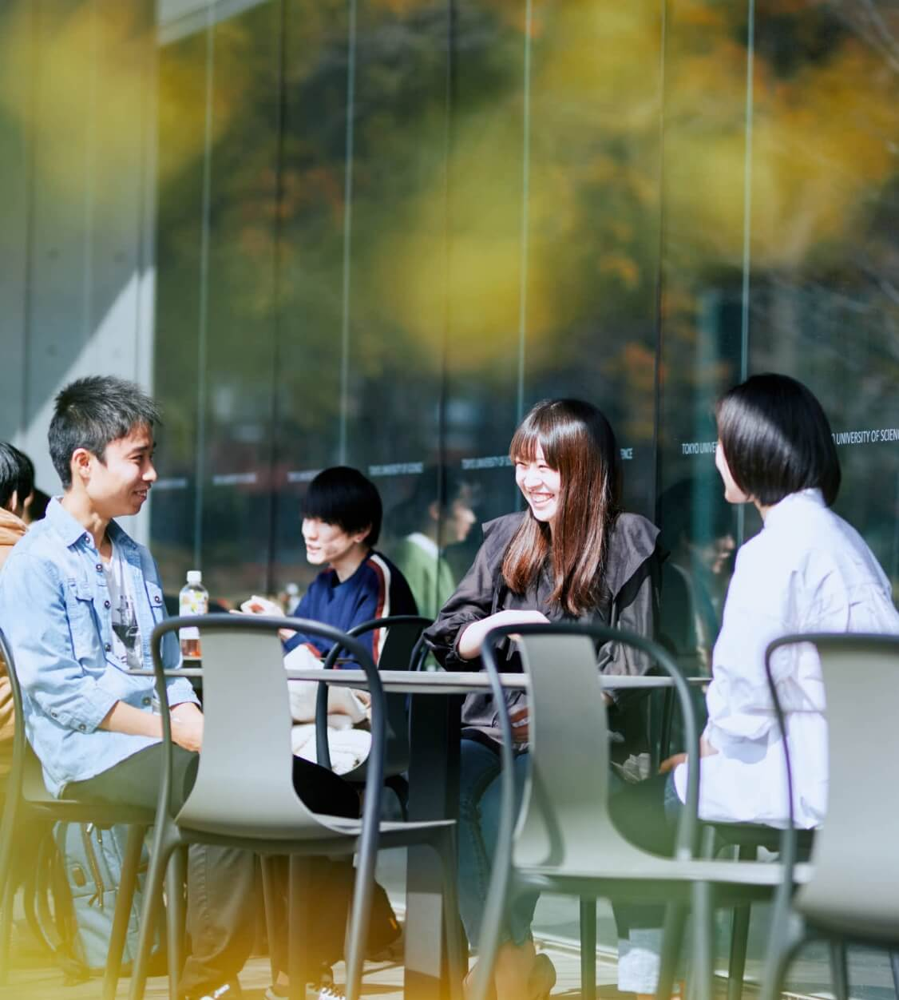
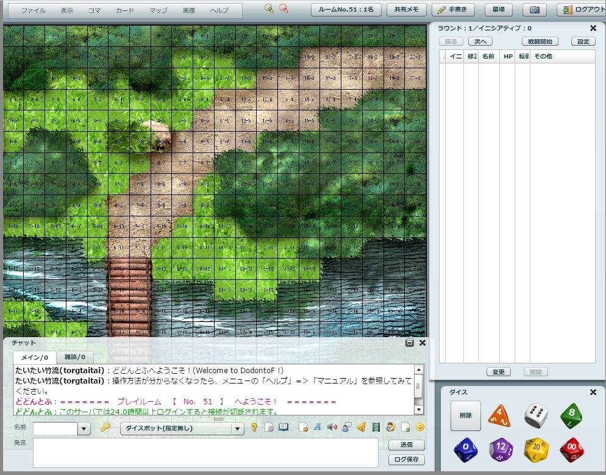
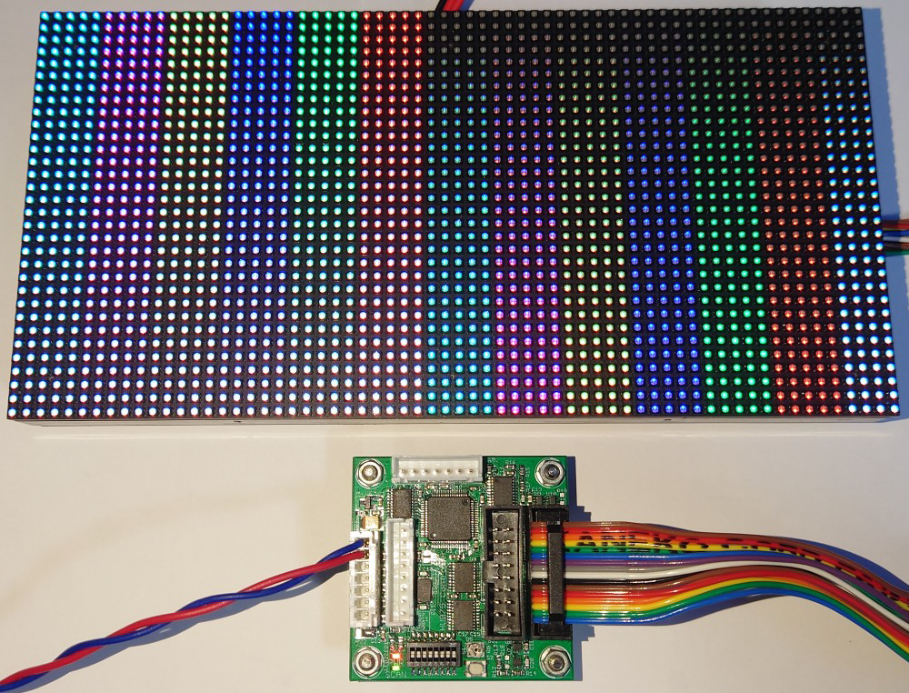
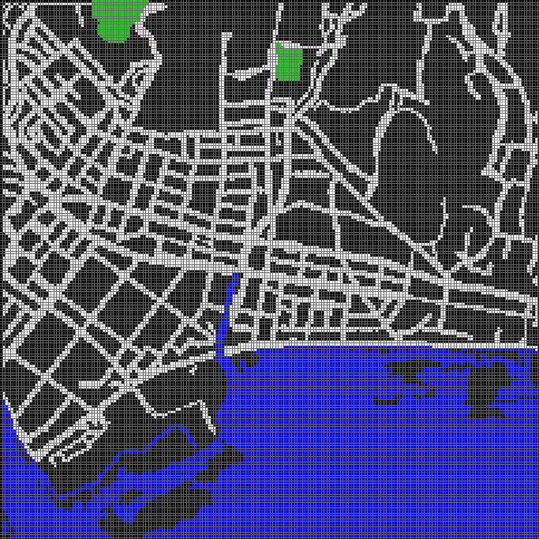
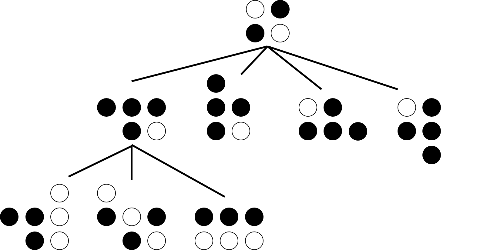
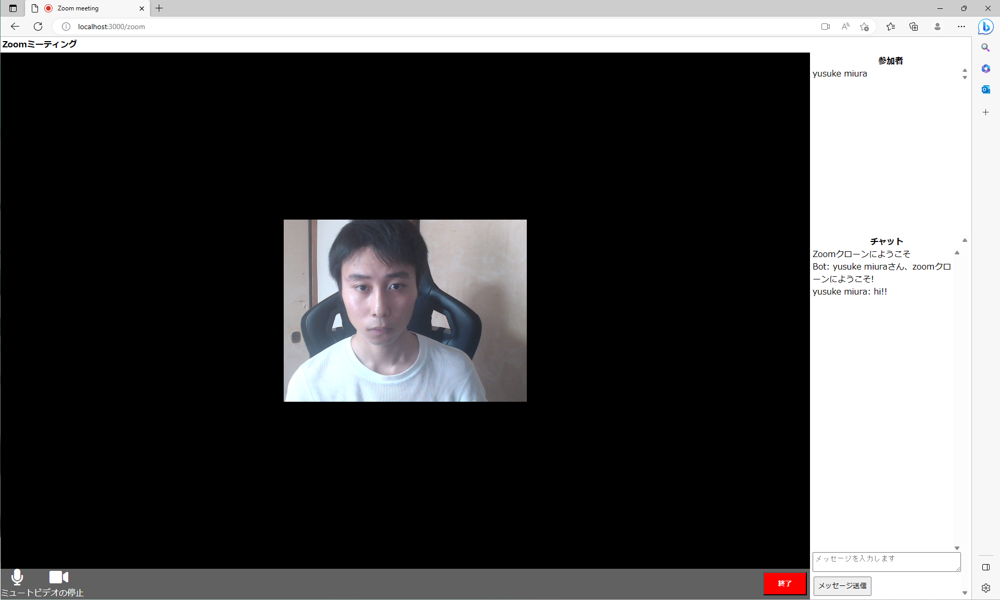
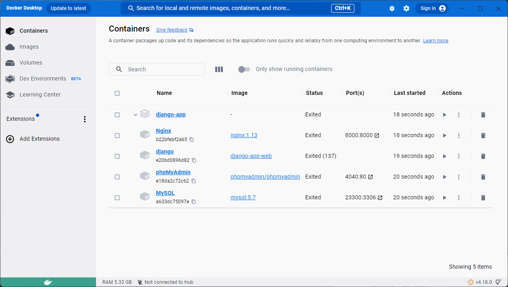

Yusuke Miura
自己紹介
幼少期からゲームやインターネットと触れ合う中でそれらの動作原理に興味を抱き、東京理科大学の情報科学科に入学。
大学で様々なITの知識を学び、ITの世界にますます没頭しています。
自分の考えたことを目に見える形として表現、実現することが好き。
現在はチームで何かを作りたいと考え、webアプリケーションの開発に取り組んでいます。
誕生日
2000/07/21
出身
千葉県 流山市
近年、おおたかの森を中心に急激な開発が行われどこか寂しさを感じています。
Githubアカウント

EDUCATION
東京理科大学院
創域理工学研究科 情報計算科学専攻
専門知識の修得と学術的探究活動を続けたいと考え、大学院に進学。
学部時代に学んだITの知識を他分野にも活用できるかを考え、横断型のカリキュラムであるDXコースに参加している。
現在は、災害時に通信インフラが機能しないことを想定し、
避難者同士で自律的にネットワークを構成するMANETを利用し、
ノードにドローンを参加させた避難誘導システムの研究について行っている。
東京理科大学
理工学部 情報科学科
GPA 3.24
松澤研究室ネットワークゼミ所属
学部3年時に情報通信ネットワークという講義でOSI参照モデルに基づいてネットワークの仕組みを
学習し、ネットワーク分野に興味を持つ。
卒業研究では、災害時の避難経路探索に多目的遺伝的アルゴリズムを適応し、
津波を想定した多数の目的を最適化し、生存率の高いより早い避難経路の提示を目指した。
千葉県立柏高等学校
理数科
スーパーサイエンスハイスクールに指定されており、夏休みの期間にはアメリカへの短期派遣も行っている。
二年時に課題研究という形で一つのテーマに取り組み、チームメンバーと共に1年間研究活動をすることを経験。
逆級化層理の生成原理について共に研究し、専門家の前で発表する機会も得た。
WORK EXPERIENCE
TA(TEACHING ASSTSTANT)
C言語、C++、Java、Pythonなどのプログラミングの演習を扱う講義の教授の補佐を行う。
具体的には、環境構築から講義内容まで学生がわからないところを教えることやレポートの採点などを行う。
自身が学んできたことを活かすことや、理解の助けに貢献でき、人から感謝されることの喜びを感じる。
ヤマト運輸
無線トランシーバーを使用し各地に配置された仲間と連携し、トラックのドライバーを誘導する仕事に従事。
10代から60代まで様々な年代の人々と共に働く機会を得ながらチームワークとコミュニケーション能力を磨く。
OTHER

オープンキャンパスで来場された方々に学科の説明や研究内容の紹介を行う。
学科の紹介ホームページの撮影に被写体として参加。
学科の魅力を的確に伝えることができるよう努める。
HOBBIES
ランニング
トレーニングや自己管理など自分の生活に向き合う必要があり、
それが形として如実に表れるところや走り切ったときの達成感に魅力を感じている。
中学時に学校を代表して千葉県東葛地区の駅伝大会にメンバーとして参加。
高校時には部長としてチームを牽引し、練習メニューの考案や他校の先生と連絡をとり共同練習を実施。
現在は趣味の一環として継続しており、自宅近くの土手を走るなどしている。
TRPG(TABLE TORK RPG)

自由な発想や参加メンバーによって物語は大きく異なり、予想できない新たな展開が生まれる魅力がある。
仲間とともに一緒に物語を作ることに楽しみを感じている。
WORK
個人開発
LEDパネルで動画再生

ラズベリーパイとLEDパネルコントローラで信号制御し動画再生を実現。
esp32で無線通信を行い、時刻を取得することで以上のビデオのようなデジタル時計も作成可能。
こちらのページで簡単にまとめている。
避難誘導シミュレータ

卒業研究で扱った避難誘導の実験を行うにあたり、マルチエージェントシミュレータをjavaで作成。
エージェントは避難者に相当し、グリッドベース上のマップに標高を加え、
時間経過で津波や火災を拡大し被災シナリオを再現。
チーム開発
オセロAI

学部3年時にプロジェクト課題と言われる複数人でテーマを決めて
実験や開発などをチームで実施する授業においてpythonで作成。
min-max法を基盤としてαβ法、Nega-scout法、MTD法やモンテカルロ木探索法など様々なアルゴリズムを実装し
勝率や計算時間などの比較実験をした。
コード共有やチームでの理解度や進捗のばらつき、スケジュール管理などの
チーム開発の難しさと挫折を味わう。
オンライン通話アプリ

上記のチーム開発時で満足のいく開発を行えなかったため、研究室のメンバーを集め主体的にチーム開発を行う。
今後のwebアプリケーション開発を本格的に行うことを見越して、ブランチ管理やプルリクやissueなどGitやGithubの
使い方を学ぶことを目的とした練習の意図で作成。
webRTCという技術を使用している。
現在

チームで何かを作成しようとした時に、メンバーを集めるのが難しかったという経験から、
ネット上で手軽にチーム開発の募集や参加をできるようなプラットフォームを作成することを決意。
現在、webアプリケーションとしてチーム開発に取り掛かっており、
dockerを使用してミドルウェアやフレームワークなどの開発環境の統一をした段階。
AWARDS&CERTIFICATIONS
奨励研究賞
学科の発表会や電子情報通信学会にて卒論の発表を行い、学科主任から 情報科学に関して優れた研究活動をしたことを認められ授与された。
基本情報技術者試験
情報系の学科に所属している者として、最低限の知識を有していることを証明するために取得。